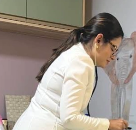

Primeiros cuidados
Orientações sobre os primeiros meses de vida e as dúvidas da chegada do bebê.
Da chegada do bebê às descobertas da infância, cuidado pediátrico para acolher suas dúvidas e orientar sua família.

Um espaço para acompanhar o desenvolvimento da criança e esclarecer as dúvidas que surgem na rotina das famílias.
Orientações sobre os primeiros meses de vida e as dúvidas da chegada do bebê.
Acompanhamento pediátrico em cada fase da infância.
Avaliação clínica e orientações de prevenção conforme as necessidades da criança.
Conversas sobre sono, alimentação, amamentação e desfralde.

Sou a Dra. Julianna Andrade Ribeiro, pediatra em Campo Grande (MS). Acredito que a maternidade pode ser vivida com mais leveza, informação e carinho.
Da chegada do bebê às novas descobertas da infância, quero ajudar as famílias a compreender cada fase. Por aqui, compartilho orientações sobre amamentação, sono, alimentação e desfralde — temas que fazem parte do dia a dia de quem cuida.
Conheça meu trabalhoA consulta pediátrica é um espaço para conversar sobre a saúde da criança, esclarecer dúvidas e receber orientações de acordo com suas necessidades.
Histórico de saúde, rotina e dúvidas da família.
Exame e avaliação conforme as necessidades da criança.
Orientações de saúde e acompanhamento conforme a avaliação.
Iniciativas apresentadas nos perfis profissionais da Dra. Ju.
Grupo exclusivo para pacientes do consultório e suas famílias, com recados, orientações, novidades e conteúdos especiais.
Pedir informações à secretáriaProjeto de assessoria médica pediátrica para escolas, apresentado como em construção.
Conhecer o perfil do projetoEntre em contato com a equipe para confirmar o local e os horários disponíveis.
Rua Pedro Celestino, 2296 · Centro
Campo Grande – MS
Confirme o endereço com a secretária ao agendar.
(67) 99820-9890Conteúdos sobre a saúde infantil, maternidade e os pequenos desafios de cada fase.
Informações para facilitar o primeiro contato.
Entre em contato com a secretária pelo WhatsApp (67) 99820-9890 para consultar os horários disponíveis.
O endereço divulgado é na Rua Pedro Celestino, 2296, em Campo Grande. Confirme com a equipe ao agendar.
Consulte a equipe para confirmar as modalidades de atendimento e os convênios disponíveis.
O grupo é exclusivo para pacientes do consultório e suas famílias. Peça o link à secretária.
Fale com a equipe da Dra. Ju para agendar sua consulta.
Agendar pelo WhatsApp